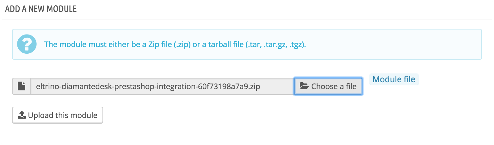

PrestaShop is a comprehensive e-commerce platform, allowing any business owner to quickly create an online shop for all sorts of products. But to ensure high quality service and build strong customer relationships, every e-commerce website should have a reliable support system. DiamanteDesk is a perfect solution for that.
DiamanteDesk PrestaShop module allows both administrator and any customer to create, edit and view tickets directly on a PrestaShop e-commerce website. All the tickets can be grouped into Branches. To learn more about branches in DiamanteDesk, see the Branches section in User Guide.
Installing DiamanteDesk Module
- Log in the PrestaShop Admin Panel.
- On the navigation panel head over to Modules > Modules and Themes Catalog for automatic installation.

Automatic installation
- On the Modules screen head over to the PrestaShop Modules List.

- Enter DiamanteDesk in the Search Plugins field and press Enter.
- Click Install.
Manual installation
Option 1 - Installation via FTP:
- Upload the addthis folder to the
modules/ directory.
- Head over to the PrestaShop admin area and connect DiamanteDesk and PrestaShop (please see the Connecting DiamanteDesk to PrstaShop section).
Option 2 - Installation via archive:
- Download DiamanteDesk module for PrestaShop from Github.
- On the top right corner of the Modules screen click Add a new module.
- Select the downloaded zip file from your computer.
- Click Install Now and activate the plugin.
- Head over to Add a new module section.

- Click Choose a file and find a required file on your local machine.
- Click Upload this module.
- After the module has been successfully installed, head over to the PrestaShop Modules List.
- Enter DiamanteDesk in the Search Plugins field and press Enter.
- Click Install.
Note: Make sure that you clear the PrestaShop caches to complete the installation of an extension.
Connecting DiamanteDesk to PrstaShop
After the module has been successfully installed, the DiamanteDesk module configuration page opens. The module shall be configured for the proper work of a help desk.
In order to do that, complete the following steps:
- Acquire API credentials from your CRM.
- Get back to DiamanteDesk module configuration page at Prestashop.

- Provide the link to the server in the Server Address field.
- Enter the Username and Api Key from your CRM.
- Click Save.
- If the credentials are correct and the connection between PrestaShop and DiamanteDesk has been successfully made, a new Default Branch field will be added to the DiamanteDesk configuration.

- Select a default branch from the drop-down list.
- Click Save.